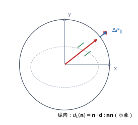

纵向压电响应与方向极大
晶轴分量 d33 依赖坐标约定；纵向系数 d_L(n) 把响应投到任意单位方向，便于比较晶体取向和筛选候选。
直观阅读需要
- 压电张量 里 e 与 d 的定义
- 单位矢量与方向余弦
只是提示，不需要先读完才能往下看。
直觉直观解释
实验或论文里常写的 d_{33}，指的是某一套坐标轴下的分量：第 3 轴方向的电场（或极化）与同一方向的正应变之间的耦合。换一套晶轴命名，d_{33} 可以变成别的下标，甚至按对称性直接为零（例如许多单斜设置里主剪切分量不叫 d_{33}）。
纵向压电响应问的是另一件事：沿某个单位方向 \mathbf{n} 拉伸（或沿 \mathbf{n} 测极化），同一方向上耦合有多强？它不绑定“哪根轴叫 3”。在单位球上扫一遍 \mathbf{n}，取绝对值最大的那一个，记作 d_{L,\max}，常用来比较取向不同的晶体，或给结构搜索排个与坐标约定无关的标量分数。

| 符号 | 是什么 | 图里对应 |
|---|---|---|
| \mathbf{n} | 单位方向 | 红色箭头 |
| x,y | 某一套笛卡尔坐标轴 | 灰色坐标轴 |
| \Delta P_\parallel | 沿 \mathbf{n} 的极化变化（示意） | 蓝色箭头 |
| 绿色短线 | 沿 \mathbf{n} 的纵向伸长示意 | 垂直于 \mathbf{n} 的两段标记 |
定义与公式数学与推导
方向极大（标量）取
d_{L,\max} = \max_{\|\mathbf{n}\|=1}\bigl|d_L(\mathbf{n})\bigr|
其中最大值在单位球上取。实际计算可对球面积分离散采样，或利用对称性把搜索限制在不可约方向上。
与 e、s^{E} 的关系不变：先有 d = e\, s^{E}，再对 d 做上面的方向投影 [@ieee-176-piezo; @wu-2005-strain]。因此 d_L 继承弹性柔顺的病态：某个方向上 C 很软（s 很大）时，e 并不大也可能给出很大的 |d_L|。
在本研究线里的样子对应与边界
- 和晶轴分量对照：点群允许的 d_{33} 可以为零，同时 d_{L,\max} 由别的分量（例如剪切型）贡献；只盯 d_{33} 会漏掉取向最优方向。
- 结构筛选：在许多候选晶体之间比较时，d_{L,\max} 少受“笛卡尔轴怎么贴到晶轴”的影响；但若两套计算的弹性软度差很多，d_L 排序仍可能跟着 s 走，需要同时看 e_L 或 C 的最小本征值（见 弹性张量）。
- 交叉检查：在选定的 \mathbf{n} 上施加小的纵向应变，用 Berry 相读极化变化，线性区内应逼近由 e、s 组装出的 d_L(\mathbf{n})；这是验收，不是另一套理论（见 极化与 Berry 相、有限差分与微扰方法）。
常见坑对应与边界
- 把 d_{33} 当成材料标量：d_{33} 是分量；换设置或换样品坐标，同一个物理晶体可以有不同的 d_{33}。
- 只看大的 d_L，不看 C：软方向上 d_L 被 s 放大时，数值对弹性误差极敏感；需要同时报告力学稳定性与 e 一侧的大小。
- 粉末或陶瓷数据：多晶平均不是简单的 d_{L,\max}，还依赖织构与边界条件；不能把单晶方向极大直接当成陶瓷测值。
检验自己对应与边界
参考资料
官方文档IEEE Std 176
IEEE Standard on Piezoelectricity, ANSI/IEEE Std 176-1987
尚未实际查阅，目前只是拟查阅书目
论文Wu, Vanderbilt & Hamann 2005
尚未实际查阅，目前只是拟查阅书目
分类响应与张量性质 · 概念 · 研究线：压电与响应计算 · 状态：草稿